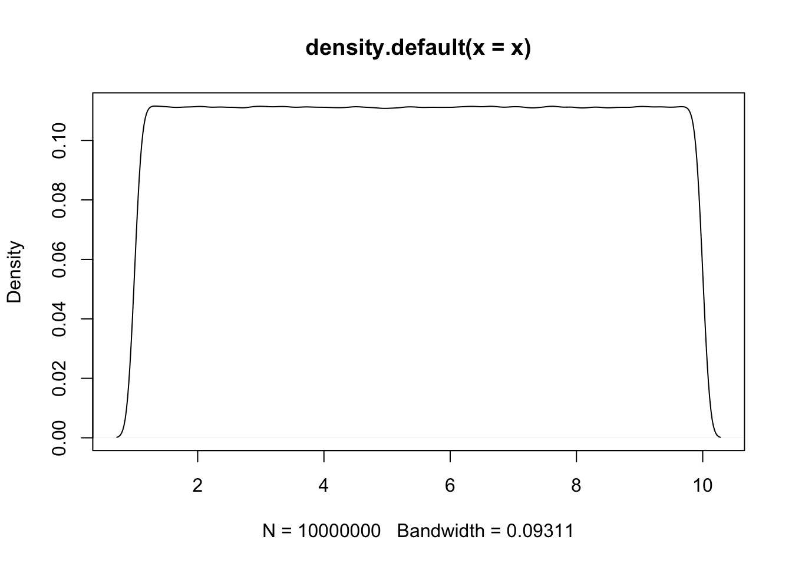
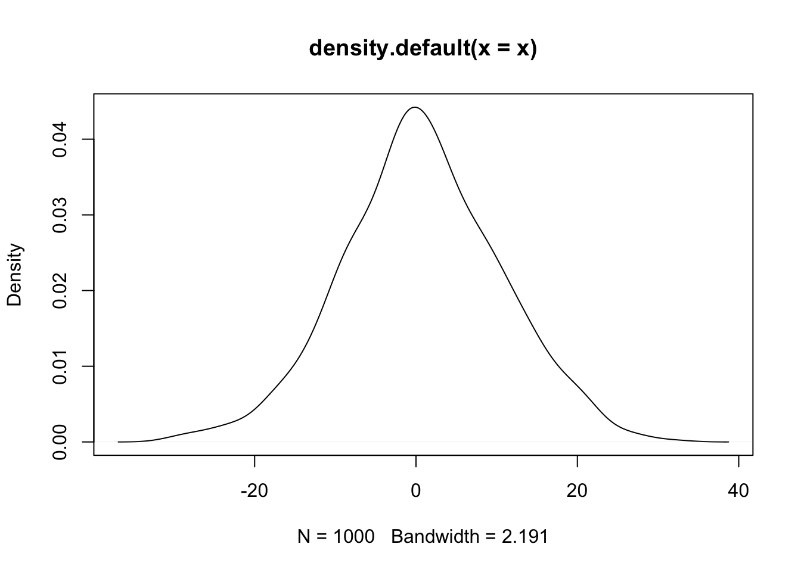
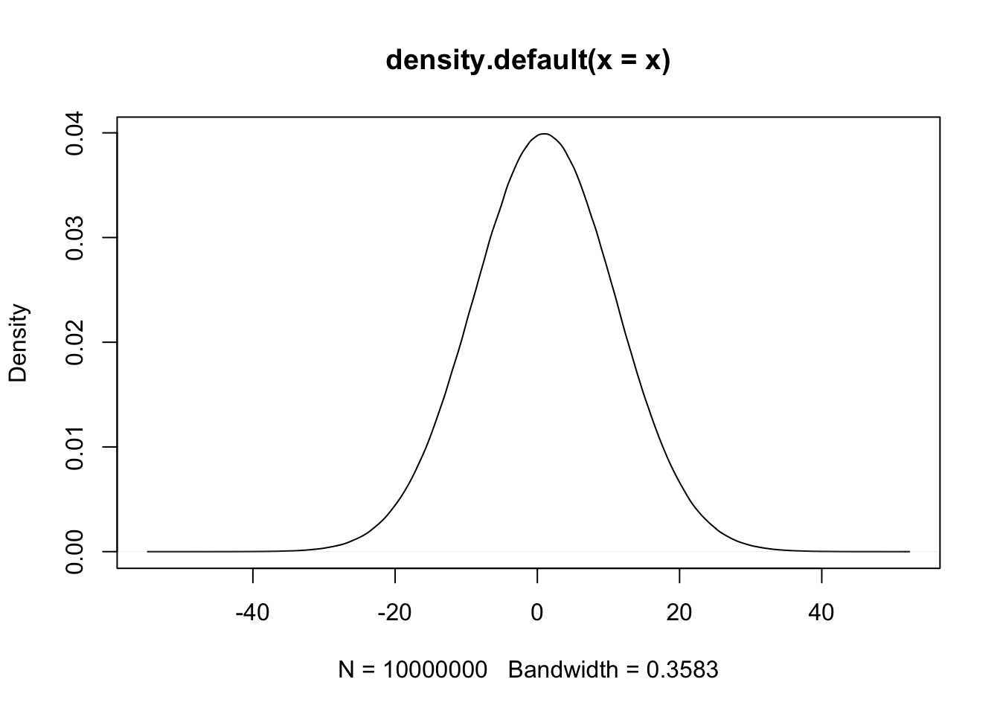

Chapter 3 Vector basic operations
3.1 Creating
- 在程式碼中，只要是文字必用成對的雙引號或單引號包含其中，以區隔「變數」和「數字」。例如如果看到沒有雙引號的「英文字母」必定是變數名稱，或函式名稱。
- 如果看到有雙引號的數字，那也是文字。
income <- c(70100, 51300, 51100, 48400, 47600, 43000)
county <- c("台北", "新北", "桃園", "高雄", "台中", "台南")
population <- c(2.6, 3.9, 2.2, 2.7, 2.8, 1.8)
area <- c(271.8, 2052.5, 1221, 2951.9, 2214.9, 2191.7)
income## [1] 70100 51300 51100 48400 47600 43000county[c(5, 3, 1)]## [1] "台中" "桃園" "台北"county <- county[c(5, 3, 1)]
county## [1] "台中" "桃園" "台北"area## [1] 271.8 2052.5 1221.0 2951.9 2214.9 2191.7population## [1] 2.6 3.9 2.2 2.7 2.8 1.83.2 Creating a sequence
a <- seq(11, 99, 11)
a## [1] 11 22 33 44 55 66 77 88 99b <- 11:20
b## [1] 11 12 13 14 15 16 17 18 19 203.3 Creating sequences by distribution
x <- runif(10000000, 1, 10) # uniform dist, n=1000
plot(density(x))
x <- rnorm(1000, 1, 10) # uniform dist, n=1000
plot(density(x))
x <- rnorm(10000000, 1, 10) # normal dist, n=1000
plot(density(x))
3.4 Viewing
county## [1] "台中" "桃園" "台北"income## [1] 70100 51300 51100 48400 47600 43000head(county)## [1] "台中" "桃園" "台北"tail(county)## [1] "台中" "桃園" "台北"length(county)## [1] 3mode(county)## [1] "character"class(county)## [1] "character"# View(county)
length(county)## [1] 3length(income)## [1] 63.5 Subsetting, filtering
It is important to know how to neglect first n or last n elements. For example, a[1:(length(a)-2)] will neglect the last two elements. Thinking why I need parentheses for length(a)-2 here.
county## [1] "台中" "桃園" "台北"county[c(5, 3, 1)] # how about country[c(1, 3, 5)]## [1] NA "台北" "台中"county[3:6] # is it equal to country[c(3, 4, 5, 6)]## [1] "台北" NA NA NAa <- 11:19
a[3:length(a)]## [1] 13 14 15 16 17 18 19a[length(a):3]## [1] 19 18 17 16 15 14 133.6 Deleting
- Without assignment, deletion won’t change original vectors
b <- 11:20
b[-(3:5)]## [1] 11 12 16 17 18 19 20b[-c(1, 3, 5)]## [1] 12 14 16 17 18 19 20b## [1] 11 12 13 14 15 16 17 18 19 20- Correct deleting operations with assignment to replace original vector
b <- b[-(3:5)]
b## [1] 11 12 16 17 18 19 20a <- seq(11, 99, 11)
a <- a[-c(1, 3, 5)]
a## [1] 22 44 66 77 88 993.7 Concatinating
- Concatinating is quite useful for web crawling when you crawl article links page by page. You may be not sure the number of page you need to crawl. So you need to append entire new vector to old vector. It is concatinating. (“Appending” often means adding one new element at the end of data.)
a <- 1:10
a <- c(a, 11)
a## [1] 1 2 3 4 5 6 7 8 9 10 11b## [1] 11 12 16 17 18 19 20a <- c(a, b)
a## [1] 1 2 3 4 5 6 7 8 9 10 11 11 12 16 17 18 19 20a <- c(a, a, b)
a## [1] 1 2 3 4 5 6 7 8 9 10 11 11 12 16 17 18 19 20 1 2 3 4 5 6 7
## [26] 8 9 10 11 11 12 16 17 18 19 20 11 12 16 17 18 19 20